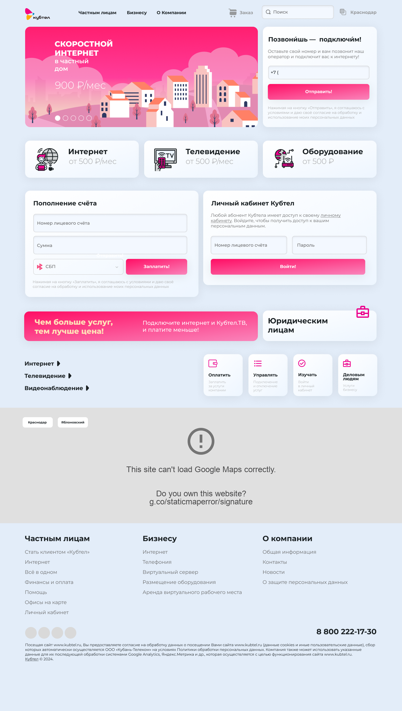
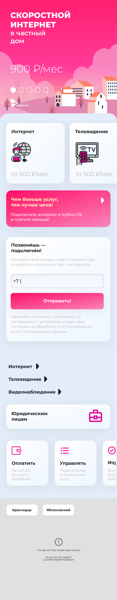
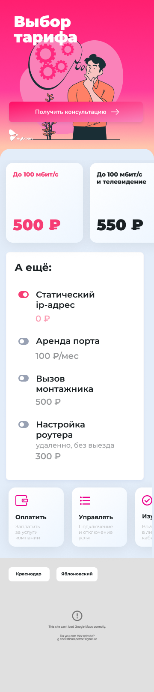
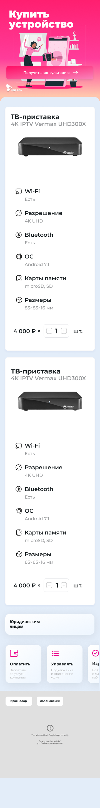
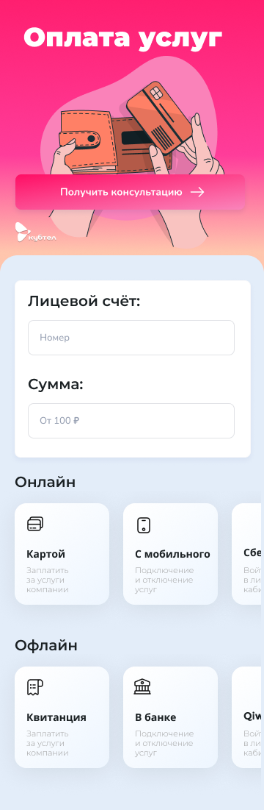
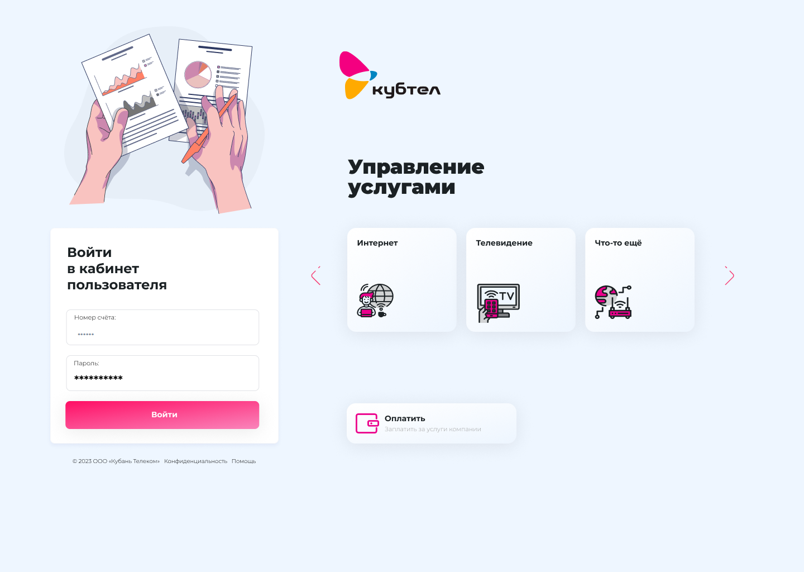
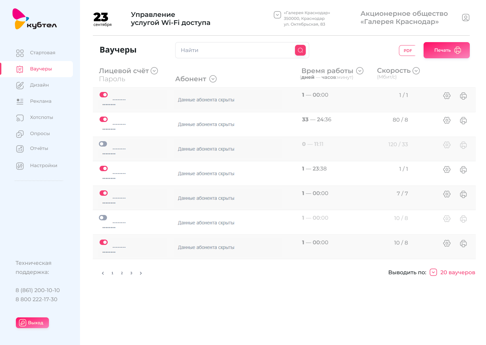
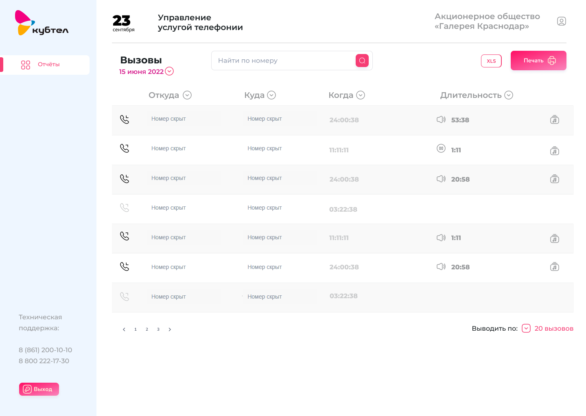
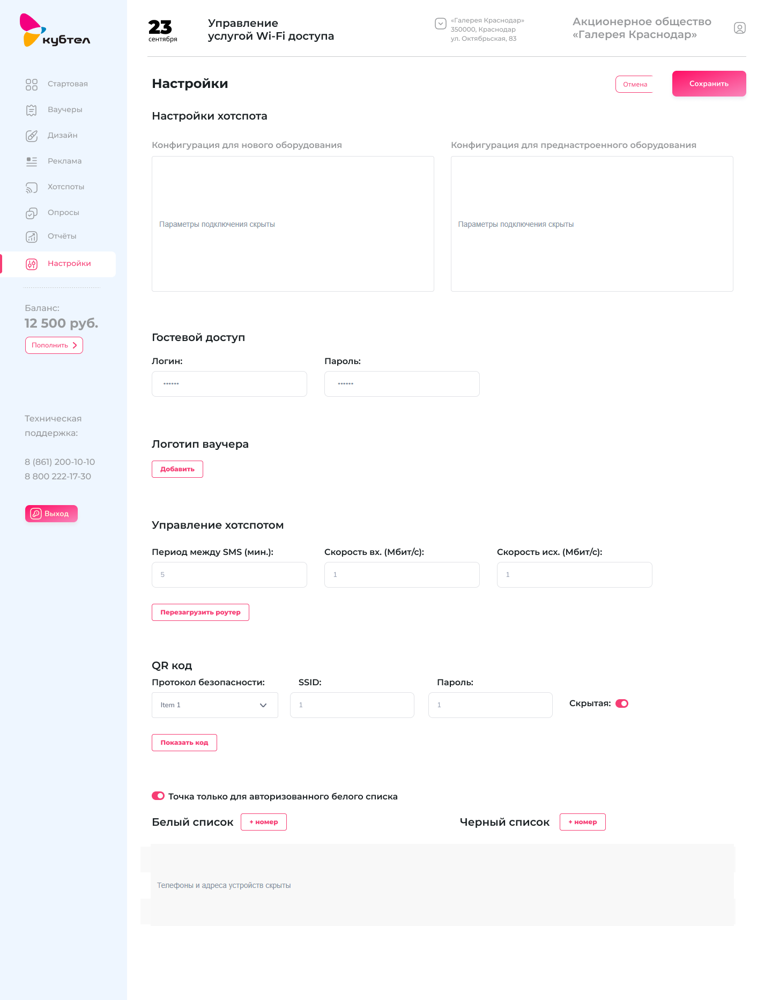

Выбрать и подключить
Сравнить тарифы, подобрать оборудование, оставить номер для связи.
02 / KUBTEL · Сайт и кабинеты
Я объединил сайт провайдера и кабинеты управления услугами в одну дизайн-систему. Частный клиент выбирает тариф и оплачивает связь. Бизнес работает с телевидением, Wi-Fi и телефонией в привычной структуре.
Рассмотреть решения ↓

От первого знакомства до ежедневной работы с услугой
01 / Контекст
На публичном сайте человек знакомится с предложением: интернетом, телевидением и оборудованием. В кабинете он приходит с конкретной задачей. Для бизнеса это уже ежедневные операции: найти ваучер, проверить активность, выгрузить звонки или изменить параметры доступа.
Сравнить тарифы, подобрать оборудование, оставить номер для связи.
Найти лицевой счёт, пополнить баланс, перейти к своей услуге.
Работать со списками, настройками, отчётами и состояниями услуг.
Сохранить узнаваемый бренд, но дать каждой аудитории свою плотность информации и свой путь к действию.
02 / Продуктовая логика
Я разделил интерфейсы по намерению пользователя. Витрина объясняет предложение, сервисные формы помогают выполнить действие, рабочие кабинеты дают контроль над услугой.
Главная → тариф → оборудование → заявка
Предложение и следующий шагЛицевой счёт → оплата или вход
Короткая форма и понятное действиеУслуга → сводка → список → настройка
Контекст, поиск, состояние и результатМакеты показывают структуру и дизайн решения. Эффект на конверсию, скорость работы и нагрузку поддержки оценивается отдельно; измеренных результатов в кейсе нет.
03 / Публичный сайт
Верх страницы знакомит с услугами и сразу предлагает оставить номер. Ниже доступны пополнение счёта и вход в кабинет. Новому клиенту не нужно разбираться в структуре кабинета, а действующему — проходить через весь рекламный сценарий.

Баннер и форма подключения работают рядом. Сервисные задачи выделены в собственные блоки.
Интернет, ТВ и оборудование используют одинаковую логику: название, образ услуги и краткое условие.
В исходном экспорте виден сбой карты. Перед выпуском для неё нужны рабочее подключение и запасной список адресов.
04 / Мобильный сценарий
На телефоне предложение, карточки и формы складываются в последовательный маршрут. Короткий экран показывает точку входа, длинный экспорт — как за ней следуют заявка, сервисные действия и контакты.
На первом мобильном макете нижняя панель даёт доступ к главной, заказу, меню и входу. Заказ выделен цветом и положением — его видно среди остальных пунктов.
В длинном экспорте форма обратного звонка находится в отдельной карточке: заголовок, пояснение, телефон и одно основное действие.

05 / Выбор и оплата
Тарифы сравниваются по цене и составу. У оборудования видны характеристики и количество. У оплаты — лицевой счёт, сумма и способы пополнения. Общие карточки, поля и акценты связывают эти страницы между собой.



Сделать следующий шаг заметным, а условия — доступными до действия. Для оплаты подтверждение результата и обработку ошибки нужно проверить уже на рабочем сценарии.
06 / Вход в кабинет
Лицевой счёт, пароль и вход собраны в одной карточке. Рядом обозначены направления управления: интернет, телевидение и другие услуги. Оплата остаётся отдельным доступным действием.

07 / Рабочие кабинеты
В кабинетах визуальный акцент смещается на данные. Слева — разделы, сверху — услуга и организация, в основной области — сводка, список или настройки. Эта структура повторяется в ТВ, Wi-Fi и телефонии.
На стартовом экране рядом находятся абоненты, тарифы, активность и устройства. Крупная сводка помогает определить, какой участок требует внимания, прежде чем переходить к деталям.
Поиск, состояние ваучера, время работы, скорость и действия строки собраны на одном экране. Экспорт и печать находятся в верхней части, размер выдачи и страницы — под таблицей.

У звонка свои поля: откуда, куда, когда и длительность. Общая структура таблицы, поиск, выбор периода, выгрузка и печать остаются знакомыми.

Показатели на дашборде, суммы, тарифы и даты — содержимое дизайн-макетов. Они не описывают текущие цены KUBTEL или результаты внедрения.
08 / Настройки
Параметры хотспота, гостевой доступ, оформление ваучера, ограничения скорости, QR-код и списки доступа собраны в отдельных группах. Названия групп помогают сориентироваться до изменения значения.

Находятся в верхней части формы и относятся к её изменениям.
Выделена собственной кнопкой. При реализации ей нужно подтверждение последствий.
Нужны состояния «сохранено», «ошибка» и защита от потери несохранённых изменений.
09 / Дизайн-система
Голубая основа объединяет страницы. Светлые карточки создают смысловые группы. Розовый акцент отмечает действие или выбранный раздел, а иллюстрации и контурные иконки помогают различать услуги.
Карточка работает для услуги, тарифа, способа оплаты и короткого действия.
В кабинетах меняется содержимое, но сохраняются навигация, шапка и организация рабочей области.
На рабочих данных нужны достаточный контраст, подписи состояний и заметный фокус клавиатуры.
10 / Проверка решения
Я связываю проверку интерфейса с конкретной задачей. Замеры до и после нужны на сопоставимых сценариях; счётчики из макетов для этого не подходят.
Доля завершённых заявок от начала формы. Отдельно — ошибки телефона и отказы на каждом шаге.
Проверка: выбрать услугу и оставить заявку на телефоне.Успешные оплаты от начатых. Повторное нажатие, отказ и отсутствие понятного подтверждения учитываются отдельно.
Проверка: найти способ оплаты и объяснить результат.Медиана времени до нужного ваучера или звонка, доля успешных заданий без помощи, число ошибок.
Проверка: найти запись, изменить допустимый параметр, выгрузить отчёт.Доля корректно сохранённых изменений, понимание результата и число случайных опасных действий.
Проверка: изменить параметр и отличить сохранение от перезагрузки.Разобрать реальные заявки, платежи и задачи сотрудников; собрать исходные значения.
Проверить макеты с частными клиентами и бизнес-пользователями. Не смешивать результаты разных ролей.
Сверить успешность задач, ошибки и время. Остановить расширение, если платёж или изменение настроек получает неоднозначный результат.
11 / Результат
Результат моей работы — связанный набор интерфейсов: публичная витрина, мобильные страницы услуг и оплаты, вход в кабинет, рабочие экраны ТВ, Wi-Fi и телефонии.
Общая визуальная система сохраняет узнаваемость бренда. Структура каждого экрана отвечает за свою задачу: выбрать услугу, выполнить действие или управлять данными.
Вернуться к макетам ↑Юрий Пылёв · Product / UX Engineer